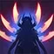

스킬 소개
P / Q / W / E / R 버튼을 눌러 스킬을 확인하세요

P — 아이오니아의 열정
이렐리아가 스킬로 적을 맞히면 6초 동안 중첩을 1 얻습니다. (최대 4중첩) 이렐리아가 중첩당 공격 속도를 얻으며 최대 중첩 시 기본 공격으로 추가 마법 피해를 입힙니다. 챔피언이나 구조물, 대형 몬스터 공격 시 중첩 지속 시간이 초기화됩니다. 챔피언을 맞히거나 챔피언이 아닌 적을 하나라도 맞힐 때마다 1중첩을 얻습니다.
이 패시브 스택은 여러 챔피언에게 같은 스킬을 한번에 적중시 스택을 맞춘 만큼 쌓을 수 있기에 W, E, R 등의 광역기를 활용해서 한번에 스택을 쌓을 수도 있다.
패시브 스택은 이렐리아의 라인전과 한타 운영 전반에 영향을 미치는 핵심 메커니즘으로, Q와 결합하면 극대화된다. 이는 Q에 있는 재사용 대기 시간 초기화 덕분이다.
플레이 팁
4스택 타이밍을 항상 인지하고 있어야 한다. 강화 평타 직후 Q를 사용하면 추가 피해와 돌진을 동시에 넣을 수 있어 딜교 효율이 크게 올라간다.
라인전에서 미니언을 막타치며 스택을 쌓다가 4스택 시점에 적 챔피언에게 강화 평타 → Q 순서로 견제하는 패턴이 기본이다.
스택이 3개인 상태에서 미니언 한 마리에만 Q를 타며 초기화를 하면 4스택이 되므로, 적에게 진입하기 전 미니언으로 스택을 채워두는 습관을 들이자.
비슷한 얘기로 한 미니언씩 딜링을 하는 것 보다 주변에 있는 미니언을 모두 Q 초기화 피로 맞춰놓은 뒤 순식간에 Q를 여러번 타며 4스택을 만들 수 있다.
Q — 칼날 쇄도
이렐리아가 적에게 돌진해 물리 피해를 입히고 체력을 회복합니다. 적이 죽거나 불안정 상태일 경우 재사용 대기시간이 초기화됩니다. 미니언에게는 추가 피해를 입힙니다. - 나무위키 이렐리아 문서
이렐리아의 상징이자 이렐리아의 독보적인 캐리력을 담당하는 핵심 스킬. 이렐리아가 빠른 속도로 적에게 돌진하여 물리 피해를 입힌다.
온힛 스킬이기 때문에 평타에 묻어 나가는 부가 효과가 적용된다. 사거리도 길며 타겟팅이라 빗나갈 일도 없으며 조건부 쿨타임 초기화까지 붙어 있는 최상급 돌진기 중 하나이다.
자체 재사용 대기 시간은 긴 편이지만, 돌진으로 대상을 처치하거나 E와 R을 적중시켜 표식을 남긴 대상에게 사용하면 재사용 대기시간이 초기화 된다.
위 특징들을 이용해 적들을 징검다리처럼 타면서 치고 빠질 수 있다. 4스택 타이밍에는 미니언을 타고 적에게 달려들어 평타로 딜교를 한 후 상대의 반격 타이밍에 미니언을 타고 도망가며 불합리한 딜교를 할 수 있다. 반대로 미니언을 등지며 상대를 견제하다가 갱이 오면 미니언을 타고 도망갈 수도 있다. 돌진 속도가 매우 빠르기 때문에 미니언을 타서 스킬을 회피하는 것 또한 가능하다. 한타에서는 E나 궁극기 등과 조합해서 그야말로 적들 사이를 춤추듯 오가는 것도 가능하다.
플레이 팁
게임 회사의 의도인지는 모르겠으나 표식을 터뜨려 초기화 시킨 경우 Q 스킬의 쿨타임이 0이 아닌 약 0.2초로 반환된다.
반면 대상을 처치하여 초기화 시킨 경우 0초로 바로 같은 스킬을 사용할 수 있다.
또한 스킬의 캔슬 성능이 좋은 편이라 평타를 친 후 바로 Q 스킬을 사용하면 평타의 후딜레이를 줄이고 Q 피해를 더욱 빠르게 넣을 수 있다.
이런 점들을 활용하여 표식으로 초기화 시킨 스킬의 0.2초 재사용 대기 시간 동안 평타를 친 후 다시 Q를 사용하면 딜로스를 줄일 수 있다.
또한 알아두면 굉장히 유용한 팁으로, 해당 스킬은 시전 시 대상의 등 뒤로 이동하기 때문에 세트의 강펀치, 야스오의 회오리, 럭스의 최후의 섬광, 신드라의 적군 와해 등의 핵심 스킬을 회피할 수 있다.
또한 표식 초기화 판정이 굉장히 널널한 편이라 대상이 E와 R로 표식이 생기는 것이 확정적일 때에는 Q를 선입력 함으로써 보다 빠르게 콤보를 넣을 수 있다.
필자의 경험으로는 궁극기를 사용하면서 동시에 Q를 사용했을 때 궁극기가 적중하기 전 Q가 먼저 닿아도 초기화가 되는 경우가 있었다.
W — 저항의 춤
충전 시작 시: 이렐리아가 최대 1.5초 동안 방어 태세에 돌입하여 행동할 수 없게 되지만 받는 물리 피해, 마법 피해가 감소합니다. 발사 시: 이렐리아가 검을 날려 물리 피해를 입힙니다. 피해량은 충전 시간에 비례하여 최대 3배만큼 증가합니다. - 나무위키 이렐리아 문서
저항의 춤은 이렐리아의 유일한 방어 스킬이다. 시전 중 받는 물리 피해를 크게 감소시키며, 충전이 끝나면 전방으로 칼날을 발사해 피해를 입힌다.
또한 피해 감소량에 주문력 계수가 존재하기 때문에, 다소 예능적인 빌드이기는 하지만 AP 이렐리아 역시 이론상 운용이 가능하다.
이렐리아는 기본적으로 돌진 후 근접 교전을 수행하는 챔피언이기 때문에 적진 한가운데로 들어가는 경우가 많다. 따라서 저항의 춤은 생존에 매우 중요한 역할을 담당한다.
단순한 방어기가 아니라 패시브 스택을 쌓을 수 있으며, 라인전에서는 상대의 핵심 기술을 받아내고 반격할 시간을 만들어 주는 스킬이다.
플레이 팁
신드라의 궁극기, 제드의 궁극기, 아칼리의 2차 궁극기, 잭스의 강화 평타(W), 레넥톤의 강화 W처럼 강력한 순간 피해를 감소시키는 용도로 사용하면 효과적이다.
하지만 다리우스의 궁극기, 세트의 W 중앙 고정 피해, 가렌의 궁극기와 같은 고정 피해는 감소시킬 수 없으므로 주의해야 한다. 이러한 상성은 카운터 페이지에서 더 자세히 다룰 예정이다.
반드시 끝까지 충전할 필요는 없다. 짧게 사용하여 피해 감소 효과만 챙긴 뒤 곧바로 공격을 이어가는 것도 좋은 선택이다.
또한 W는 정신 집중 판정이 아니기 때문에 상대의 CC기에도 끊기지 않는다. 이를 이용하여 에어본 없이 상대를 강제로 이동시키는 CC기(매혹, 도발)는 W를 충전하면 무시할 수 있다.
또한 W 시전 후 플래시를 사용할 경우 플래시로 이동한 위치에서 칼날이 발사된다.
이를 활용하면 W를 충전한 상태로 플래시를 사용해 예상치 못한 거리에서 적을 마무리할 수 있으며, W로 피해를 흡수한 뒤 표식이 남아 있는 적에게 플래시 → 평타 → Q 캔슬을 연계해 역관광을 노릴 수도 있다.
무엇보다 중요한 것은 상대의 폭딜 타이밍을 예측하는 것이다. 너무 빨리 사용하면 지속시간이 끝나고, 너무 늦게 사용하면 피해를 그대로 받게 된다.
E — 쌍검협무
이렐리아가 지면에 검을 던집니다. 3.5초 내에 스킬을 재사용할 수 있습니다. 재사용 시: 이렐리아가 두 번째 검을 던진 후 두 검이 서로를 향해 날아들어 0.75초 동안 적을 롤아이콘-군중제어 기절기절시키고 마법 피해를 입힙니다. 챔피언과 대형 정글 몬스터는 5초 동안 불안정 상태가 됩니다. - 나무위키 이렐리아 문서
두 개의 칼날을 배치한 뒤 서로 충돌시켜 경로상의 적에게 피해와 기절을 부여한다. 또한 적중한 적에게 표식을 생성하여 Q 스킬을 초기화할 수 있게 만든다.
이렐리아의 대부분의 콤보는 E 적중을 전제로 한다. 따라서 E를 얼마나 정확하게 맞추느냐에 따라 숙련도가 크게 갈린다.
플레이 팁
초보자는 보통 자신의 뒤쪽에 첫 번째 칼날을 설치한 뒤 앞쪽에 두 번째 칼날을 설치한다.
하지만 실제로는 상대 챔피언의 뒤쪽에 첫 번째 칼날을 설치한 뒤 앞쪽으로 두 번째 칼날을 사용하는 방식이 훨씬 빠르게 발동된다.
이를 응용하면 잭스의 Q, 야스오의 E, 판테온의 W처럼 상대가 자신에게 돌진하는 것이 확정적인 상황에서 상대 챔피언 뒤쪽에 E를 미리 설치해 둘 수 있다.
이후 상대가 돌진하는 순간 두 번째 E를 사용하면 핵심 스킬을 무력화하면서 동시에 기절을 적중시킬 수 있다.
특히 야스오의 궁극기 리신의 음파 아칼리의 E 벡스의 궁 등은 적중후 재사용시 상대에게 돌진/순간이동하는 판정이기 때문에 E를 본인 주변에 설치해놓으며 심리전을 걸 수 있다.
Q로 적에게 돌진하는 도중에도 E를 사용할 수 있다. 이를 활용하면 칼날 설치 모션을 숨길 수 있으며, 이렐리아의 대표적인 콤보인 Q → E → Q → E, 일명 '큐이큐이'의 핵심 원리가 된다.
또한 미니언에 Q를 사용하는 동시에 E를 배치하면 상대 입장에서는 칼날의 위치를 파악하기 어려워진다.
예를 들어 상대 포탑 방향의 원거리 미니언에 Q를 사용해 진입한 뒤 E를 설치한다. 상대가 반응하면 아군 방향의 근거리 미니언으로 다시 Q를 사용하며 두 번째 E를 발동할 수 있다.
이를 통해 더 빠른 기절, 모션 캔슬, 안전한 이탈까지 동시에 노릴 수 있다.
또한 '뒷E → 플래시 → 앞E' 콤보를 사용하면 순식간에 사거리를 늘리면서 상대가 반응하기 어려운 기절을 적중시킬 수 있다.
마지막으로 E는 상대의 현재 위치보다 이동 방향을 예측해서 사용하는 것이 중요하다. 숙련될수록 적중률이 크게 향상된다.
대표 콤보
- Q → E → Q → E (큐이큐이)
- 뒷E → 플래시 → 앞E
- E 뒤 설치 → Q 진입 → E 앞 설치 → 기절 → 평타 → Q
- E 적중 → 평타 → Q → 평타 → Q
- R → E → Q → 평타 → Q
R — 선봉진격검
이렐리아가 칼날 다발을 날려 마법 피해를 입히고 챔피언 및 대형 정글 몬스터를 5초 동안 불안정 상태로 만듭니다. 칼날 다발은 결계 형태로 폭발하여 2.5초 동안 첫 번째 적중한 챔피언을 둘러쌉니다. 결계는 동일한 양의 마법 피해를 입히고 적을 1.5초 동안 90% 둔화시킵니다. - 나무위키 이렐리아 문서
이렐리아는 표식을 이용하여 여러 번 Q를 초기화할 수 있다.
한타 개시, 암살, 추격, 도주 차단까지 가능한 매우 강력한 스킬이다. 특히 다수의 적에게 적중할 경우 Q를 연속으로 사용하며 전장을 휘젓는 이렐리아 특유의 플레이가 가능해진다.
플레이 팁
궁극기는 피해 자체보다 표식을 생성하는 것이 핵심인 경우가 많다.
적 딜러에게 궁극기를 맞춘 뒤 Q를 연속 초기화하여 접근하는 것이 가장 일반적인 활용법이다.
적의 이동 경로를 차단하는 용도로도 사용 가능하다. 좁은 지형에서는 특히 위력이 강하다.
Q 사용 도중 궁극기를 사용하는 테크닉도 존재한다. 숙련도가 높아질수록 활용 가치가 커진다.
본인 피가 없어서 Q 피흡을 해야 하는데 Q 초기화 피가 안되는 미니언이 있을 때에도 궁을 사용하면 궁은 챔피언에게 닿으면 폭발하며 결계를 생성 및 광역 피해를 입히기에 주변에 있는 원거리 미니언을 한번에 Q 초기화 피로 만들 수 있다.
또한 궁극기 사용 후 빠르게 플래쉬를 사용하게 되면 플래쉬를 사용한 위치에서 궁이 나가게 된다. 이를 이용해 일명 궁플을 할 수 있으며 이렐리아의 국민 콤보라고도 불린다. 또한 많은 플레이어들이 궁플은 앞으로만 나가는 것으로 알고있지만 플방향과 궁 방향을 조합해서 기상천외한 콤보를 만들 수 있다. 예를 들어 이렐킹의 플레이를 보면 여러명을 한번에 맞추기 위한 옆 궁플, 상대의 핵심 스킬을 피하면서 표식을 만드는 뒷 궁플, 상대가 반응하지 못하는 W차징 앞 궁 플등이 있다.
또한 기본적으로 궁플 전에는 본인의 뒤나 부쉬 같은 안보이는 곳 또는 목적지로부터 먼곳에 첫 E 를 깔고 궁플을 하며 광역 스턴효과를 보기도 한다.
궁은 대형 몬스터에게도 표식이 남기에 오브젝트 싸움 상황에서 E → R → F (뒷 E 궁플) 콤보로 순간적인 진입과 상대 정글러를 포함한 적에게 광역 스턴을 적용하며 운이 좋으면 스틸까지 노려볼 수 있다. 상대 정글 입장에서는 암흑 시야에서 이렐리아가 궁과 플을 쓰며 나타나 본진을 휩쓸고 본인에게 스턴 까지 먹이니 당황을 해서든 기절을 해서든 강타를 제대로 못 사용해 스틸 당하는 것이다.
대표 콤보 및 응용
- R → Q → 평타 → E → Q
- E → Q → 평타 → R → Q → 평타
- 4스택 → R → Q → 평타 → E → Q → 평타 → Q
Q → E1 → Q → E2 → 평타 → Q
Q 돌진 도중 E를 사용하여 칼날 설치 모션을 숨길 수 있다. E 적중 시 생성된 표식을 Q로 소비하며 폭발적인 딜을 넣을 수 있다.
E1 → R → F → E2 → Q (궁플)
궁극기 시전 직후 플래시를 사용하면 플래시 위치에서 궁극기가 발사된다. 앞 궁플 외에도 옆 궁플, 뒷 궁플 등 상황에 따라 다양한 응용이 가능하다.
W 차징 → R → F → Q
W를 충전하며 상대의 시선을 끈 뒤 궁플을 사용하는 콤보. 상대 입장에서는 W를 의식하다가 갑작스럽게 날아오는 궁극기에 반응하기 어렵다.
E1(부쉬/시야 밖) → 궁플 → E2 → Q (오브젝트 진입)
첫 번째 E를 미리 깔아두고 궁플로 진입한 뒤 두 번째 E로 광역 스턴과 표식을 동시에 만든다. 암흑 시야에서 진입할 경우 상대 정글러가 강타 타이밍을 놓치기 쉽고 오브젝트 스틸까지 노려볼 수 있다.